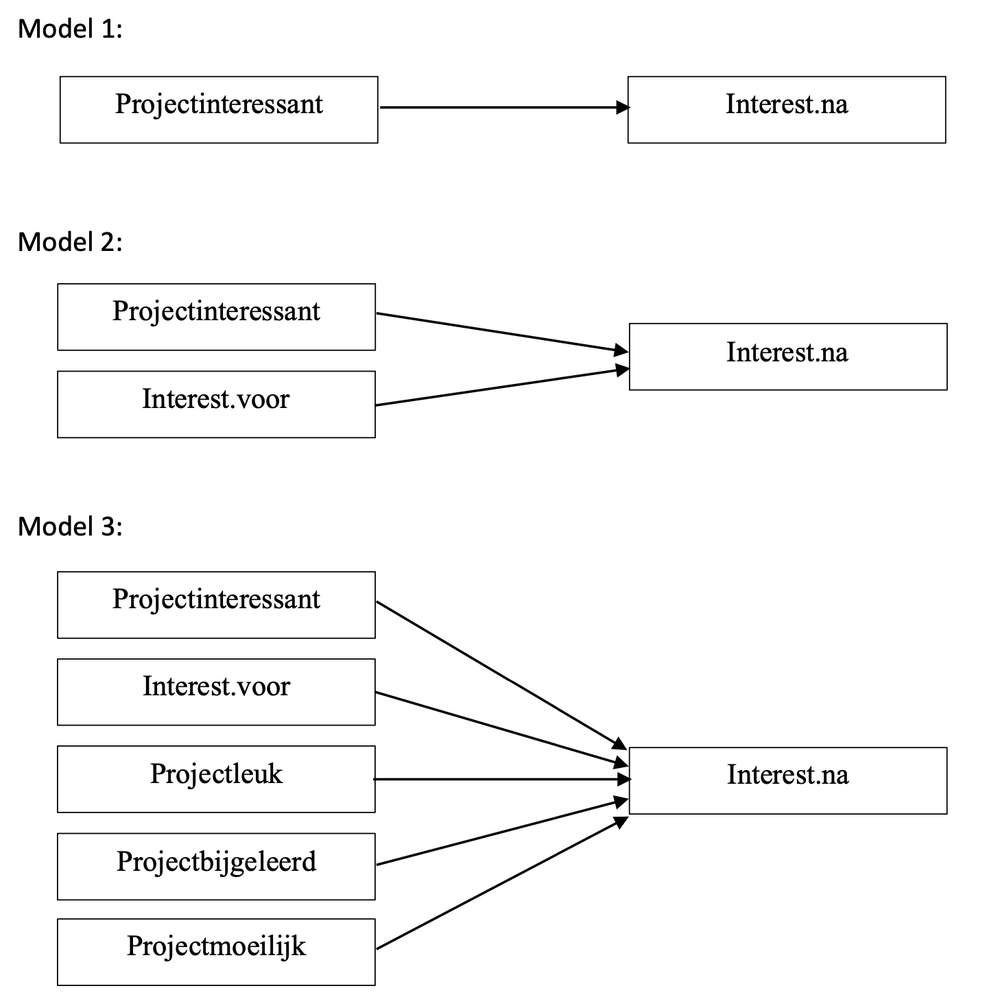
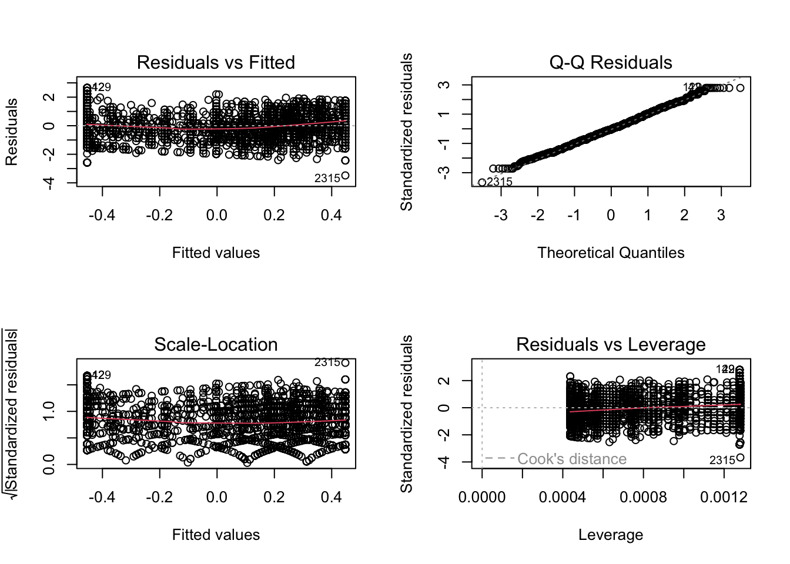
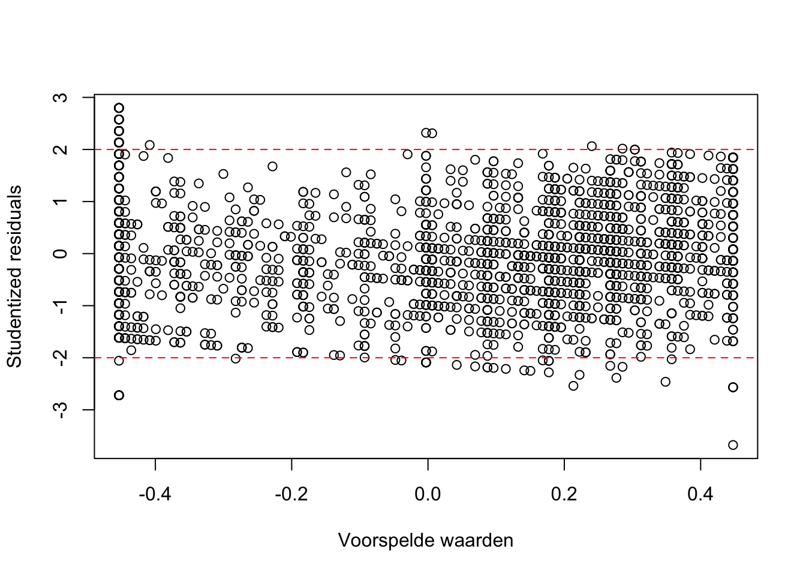
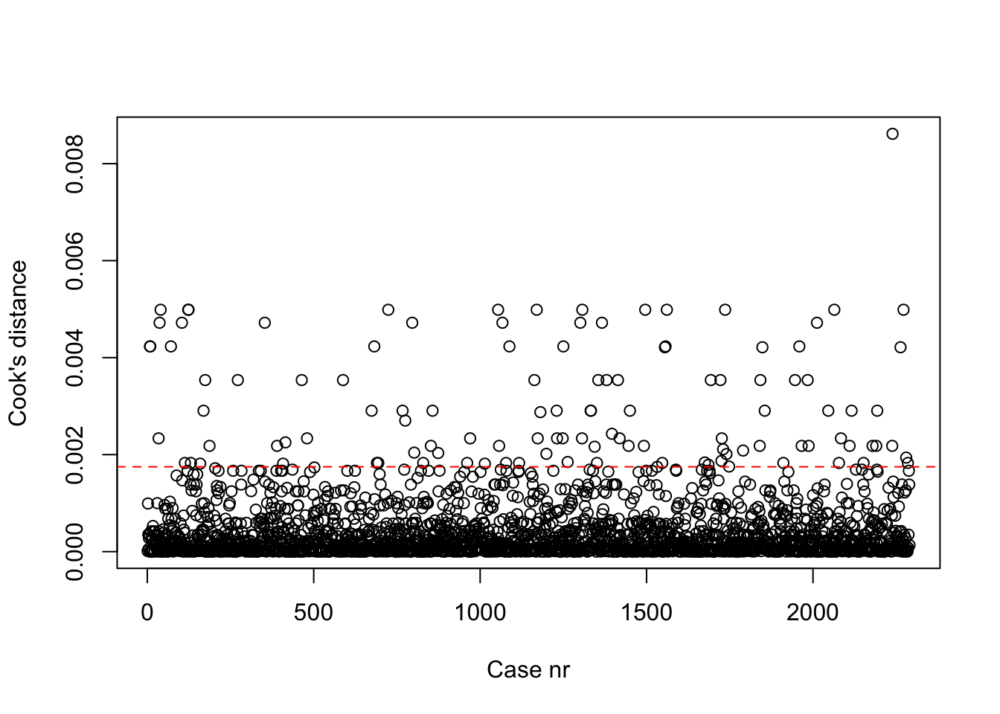

Techniek$Interest.voorZ <- scale(Techniek$Interest.voor)
Techniek$Interest.naZ <- scale(Techniek$Interest.na)
Techniek$ProjectinteressantZ <- scale(Techniek$Projectinteressant)
Techniek$ProjectmoeilijkZ <- scale(Techniek$Projectmoeilijk)
Techniek$ProjectleukZ <- scale(Techniek$Projectleuk)
Techniek$ProjectbijgeleerdZ <- scale(Techniek$Projectbijgeleerd)Contactmoment 4: Respons computer lab
Belangrijk
Vooraleer je de oefeningen kan oplossen is het belangrijk om zowel de dataset te laden, het pakket car te activeren en ook de OLP2 Functies te activeren.
Voorbereiding
We starten met het uittekenen van de 3 modellen uit de onderzoeksvragen in de opdracht.

Een tweede voorbereidende stap is het herschalen van alle betrokken variabelen naar z-scores. Merk op dat we de herschaalde variabelen wegschrijven in telkens een nieuwe variabele eerder dan de originele variabele te overschrijven. In de verdere oefeningen maken we gebruik van deze nieuwe variabelen. Hieronder maken we gebruik van de functie scale(), maar je kan net zo goed de functie z-score() gebruiken.
De laatste stap is het aanmaken van een dataframe waarin enkel de data bewaard zijn van respondenten die voor geen van deze betrokken variabelen een ontbrekende waarde hebben. Dit doen we aan de hand van de na.omit() functie.
DataC4 <- na.omit(
Techniek[ ,
c("Interest.voorZ",
"Interest.naZ",
"ProjectinteressantZ",
"ProjectmoeilijkZ",
"ProjectleukZ",
"ProjectbijgeleerdZ"
)
]
)
Opmerking
In het bovenstaande code-blok heb ik bewust een code-stijl gebruikt die veel overzichtelijker is. Door de code overheen verschillende lijnen te spreiden kan je makkelijker de haakjes van elkaar onderscheiden en zie je welke argumenten in welk onderdeel behoren.
Oefening 1
We starten met het schatten van het model. Daarbij maak ik uiteraard gebruik van de nieuw aangemaakte dataframe hierboven: DataC4.
Model1 <- lm(Interest.naZ~ProjectinteressantZ, data = DataC4)
summary(Model1)
Call:
lm(formula = Interest.naZ ~ ProjectinteressantZ, data = DataC4)
Residuals:
Min 1Q Median 3Q Max
-3.4811 -0.6902 -0.0363 0.6031 2.6525
Coefficients:
Estimate Std. Error t value Pr(>|t|)
(Intercept) -0.004071 0.019856 -0.205 0.838
ProjectinteressantZ 0.324501 0.019861 16.339 <2e-16 ***
---
Signif. codes: 0 '***' 0.001 '**' 0.01 '*' 0.05 '.' 0.1 ' ' 1
Residual standard error: 0.9502 on 2288 degrees of freedom
Multiple R-squared: 0.1045, Adjusted R-squared: 0.1041
F-statistic: 267 on 1 and 2288 DF, p-value: < 2.2e-16R-kwadraat = 0.10: het gaat om een medium effect (10% verklaarde variantie in
Interest.naZ);met p < 0.05 voorhet gehele model: kans dat we deze verklaarde variantie zouden vaststellen in onze steekproef indien H0 opgaat in de populatie is kleiner dan 5%. Dus we verwachten dat dit model in de populatie WEL variantie verklaart in
Interest.naZ.parameterschatting van het intercept = -0.004: voor een leerling die 0 scoort op
ProjectinteressantZverwachten we een score van -0.004 opInterest.naZmet p > 0.05 voor de parameterschatting van het intercept: kans dat we deze interceptwaarde vaststellen in onze steekproef indien H0 opgaat in de populatie is groter dan 5%. Dus we verwachten dit NIET in de populatie terug te vinden. Het verwachte intercept in de populatie is dus 0. Dit is niet verwonderlijk aangezien zowel de onafhankelijke (
ProjectinteressantZ) als de afhankelijke variabele (Interest.naZ) gestandaardiseerd zijn. Het intercept geeft hier dus de score weer opInterest.naZvoor een leerling die gemiddeld scoort opProjectinteressantZ. M.a.w., in de populatie scoren leerlingen die gemiddeld scoren opProjectinteressantZook gemiddeld opInterest.naZ.\(\beta_{ProjectinteressantZ}\) = 0.32, dus 1 SD (in standaarddeviaties uitgedrukt want z-score) hoger scoren op
ProjectinteressantZleidt tot 0.32 SD (in standaarddeviaties uitgedrukt want z-score) hoger scoren opInterest.naZmet p < 0.05: kans dat we deze slope in onze steekproef vaststellen indien H0 opgaat in de populatie is kleiner dan 5%. Dus we verwachten dat
ProjectinteressantZin de populatie WEL invloed heeft opInterest.naZ.
Conclusie
De mate waarin leerlingen het project interessant vinden (
ProjectinteressantZ), heeft een medium significant effect op hun interesse in techniek na het project (Interest.naZ; R² = 0.10; p < 0.05). Het effect is hier statistisch significant en positief (ß = 0.32, p < 0.05). Voor elke SD dat een leerling meer scoort opProjectinteressantZzal de interesse in techniek na het project (Interest.naZ) met 0.32 SD toenemen. Een leerling die gemiddle scoort opProjectinteressantZscoort -0.004 opInterest.naZ. Dit kunnen we echter niet doortrekken naar de populatie (p > 0.05). In de populatie verwachten we dat een leerling die het project gemiddeld interessant vindt, ook een gemiddelde interesse in techniek na het project zal hebben.
Vervolgens gaan we de assumpties na voor dit model door verschillende visualisaties aan te maken.
Opmerking
De twee laatste plots zijn interactieve plots. Dat wil zeggen dat je op je pc ook punten kan aanklikken en je krijgt vervolgens een nummer te zien. Dit is de case-nummer (rij-nummer) voor dat datapunt. In de output hier hebben we dat (omwille van technische redenen) niet kunnen doen.
# Plotvenster in 4 delen (2 rijen en 2 kolommen)
par(mfrow = c(2, 2))
plot(Model1)
par(mfrow = c(1, 1)) #zo zet je het plotvenster terug op standaardweergave
residuals_plot(Model1)
integer(0)cooks_plot(Model1)
integer(0)Homoscedasticiteit:
Grafiek ‘Residuals versus Fitted’: spreiding blijft quasi gelijk naarmate de fitted value toeneemt. Dit duidt op homoscedasticiteit.
Grafiek ‘Scale-location plot’: de rode lijn in de plot loopt min of meer recht. Dit duidt op homoscedasticiteit.
Errortermen normaal verdeeld:
Grafiek ‘Q-Q plot’: alle punten vallen min of meer op de rechte lijn. Dit geeft aan dat de errortermen normaal verdeeld zijn.
geen clustering en een lineair verband:
Grafiek ‘Residuals versus Fitted’: op deze grafiek is geen clustering van waarnemingen terug te vinden. Noch kan je op basis van deze grafiek een niet-lineair verband vermoeden.
wel outliers:
Grafieken ‘Residuals plot’ & ‘Cooks plot’: duidelijk aantal outliers zichtbaar. Deze zouden idealiter verwijderd moeten worden en dan zou je het model opnieuw kunnen schatten. Dat is hier niet de opdracht, dus doen we dat niet.
Oefening 2
We schatten dit tweede model en vergelijken dit model met het eerste model.
Model2 <- lm(Interest.naZ ~ ProjectinteressantZ + Interest.voorZ, data =
DataC4)
anova(Model1, Model2)Analysis of Variance Table
Model 1: Interest.naZ ~ ProjectinteressantZ
Model 2: Interest.naZ ~ ProjectinteressantZ + Interest.voorZ
Res.Df RSS Df Sum of Sq F Pr(>F)
1 2288 2065.7
2 2287 1310.5 1 755.26 1318.1 < 2.2e-16 ***
---
Signif. codes: 0 '***' 0.001 '**' 0.01 '*' 0.05 '.' 0.1 ' ' 1De Residuals Sum of Squares (RSS) van Model1 = 2065.7, RSS van Model2 = 1310.5. Gebaseerd op de F-test voor het vergelijken van beide modellen leren we dat Model 2 statistisch significant beter bij de data past dan model 1 (p < 0.05). We weerhouden dus best Model 2.
Nu we beslissen om Model2 te weerhouden, kunnen we de informatie over de parameterschattingen uit dat model opvragen in R via het summary( ) commando.
summary(Model2)
Call:
lm(formula = Interest.naZ ~ ProjectinteressantZ + Interest.voorZ,
data = DataC4)
Residuals:
Min 1Q Median 3Q Max
-4.0384 -0.4520 0.0093 0.4924 2.7215
Coefficients:
Estimate Std. Error t value Pr(>|t|)
(Intercept) -0.003766 0.015818 -0.238 0.812
ProjectinteressantZ 0.180850 0.016310 11.089 <2e-16 ***
Interest.voorZ 0.592104 0.016309 36.305 <2e-16 ***
---
Signif. codes: 0 '***' 0.001 '**' 0.01 '*' 0.05 '.' 0.1 ' ' 1
Residual standard error: 0.757 on 2287 degrees of freedom
Multiple R-squared: 0.4319, Adjusted R-squared: 0.4314
F-statistic: 869.3 on 2 and 2287 DF, p-value: < 2.2e-16R-kwadraat = 0.43: het gaat om een groot effect (43% verklaarde variantie in
Interest.naZ);Met p < 0.05: kans dat we deze verklaarde variantie in onze steekproef zouden vaststellen indien H0 opgaat in de populatie is kleiner dan 5%, dus we verwachten dat dit model in de populatie WEL variantie verklaart in
Interest.naZintercept = -0.004: een leerling die 0 scoort op
ProjectinteressantZenInterest.voorscoort -0.004 opInterest.naZ;Met p > 0.05: kans dat we deze interceptwaarde in onze steekproef vaststellen indien H0 opgaat in de populatie is groter dan 5%. Dus we verwachten dit NIET in de populatie terug te vinden. Het verwachtte intercept in de populatie is dus 0. Dit is niet verwonderlijke aangezien zowel de onafhankelijke variabelen (
Interest.voorZenProjectinteressantZ) als de afhankelijke variabele (Interest.naZ) zijn gestandaardiseerd. Het intercept geeft hier dus de score weer opInterest.naZvoor leerlingen die gemiddeld scoren opInterest.voorZenProjectinteressantZ. M.a.w., in de populatie scoren leerlingen die gemiddeld scoren opInterest.voorZenProjectinteressantZook gemiddeld opInteressant.na.\(\beta_{ProjectinteressantZ}\) = 0.18, dus 1 SD (want z-score!) hoger scoren op
Projectinteressantleidt tot 0.18 SD (want z-score!) hoger scoren opInterest.naMet p < 0.05: kans dat we deze slope vaststellen in onze steekproef indien H0 opgaat in de populatie is kleiner dan 5%. Dus we verwachten dat
Projectinteressantin de populatie WEL invloed heeft opInterest.na.\(\beta_{Interest.voorZ} = 0.59\), dus 1 SD (want z-score!) hoger scoren op
Interest.voorZleidt tot 0.59 SD (want z-score!) hoger scoren opInterest.naMet p < 0.05: kans dat we deze slope vaststellen in de steekproef indien H0 opgaat in de populatie is kleiner dan 5%. Dus we verwachten dat
Interest.voorZin de populatie WEL invloed heeft opInterest.naZ.Bovendien is dit effect sterker dan dat van
ProjectinteressantZ. (Je mag de sterkte van beide effecten met elkaar vergelijken, omdat beide variabelen gestandaardiseerd zijn en dus op dezelfde schaal staan.)
Conclusie
Interesse in techniek voor het project (
Interest.voorZ) en de mate waarin leerlingen het project interessant (ProjectinteressantZ) vinden verklaren de interesse in techniek van leerlingen na het project (Interest.naZ) beter als het model waarin enkelProjectinteressantZals onafhankelijke variabele is opgenomen (∆RSS = 755.26, p < 0.05). Het gaat bovendien om een sterk, significant effect (R-kwadraat = 0.43, p < 0.05). Het intercept is niet statistisch significant (p > 0.05). Een leerling die gemiddeld scoort opProjectinteressantZenInterest.voorZscoort dus ook gemiddeld opInterest.naZin de populatie. ZowelProjectinteressantZalsInterest.voorZhebben een positief en statistisch significant (p < 0.05) effect opInterest.naZ. Een toename van 1 SD inProjectinteressantZleidt tot een toename van 0.18 SD inInterest.naZ. Het effect vanInterest.voorZis sterker (ß = 0.59). 1 SD hoger scoren op interesse in techniek voor het project leidt tot een toename van 0.59 SD in interesse in techniek na het project.
Oefening 3
Hieronder schatten we dit model in z’n geheel en gaan meteen de multicollineariteit na aan de hand van de functie vif().
Model3 <- lm(Interest.naZ ~
ProjectinteressantZ +
Interest.voorZ +
ProjectleukZ +
ProjectbijgeleerdZ +
ProjectmoeilijkZ,
data = DataC4)
vif(Model3)ProjectinteressantZ Interest.voorZ ProjectleukZ ProjectbijgeleerdZ
7.041215 1.117586 5.554361 3.859391
ProjectmoeilijkZ
1.278241 Uit de bovenstaande output leren we dat de VIF voor ProjectinteressantZ 7.04 bedraagt en voor ProjectleukZ 5.55. Deze twee waarden duiden op een mogelijk probleem van multicollinearitet. We kunnen eveneens de correlatie berekenen tussen deze twee variabelen om meer zicht te krijgen op hun onderlinge samenhang al verklaring voor het mogelijk multicollineariteitsprobleem.
cor.test(DataC4$ProjectinteressantZ, DataC4$ProjectleukZ)
Pearson's product-moment correlation
data: DataC4$ProjectinteressantZ and DataC4$ProjectleukZ
t = 99.142, df = 2288, p-value < 2.2e-16
alternative hypothesis: true correlation is not equal to 0
95 percent confidence interval:
0.8926227 0.9081126
sample estimates:
cor
0.9006534 Deze variabelen blijken zeer sterk te correleren (r = 0.90). Daarom is het aangewezen om het model de herdraaien zonder één van beide variabelen. Anders levert dit vertekende significantietoetsen voor de betrokken variabelen op. Daarom herschatten we het model zonder de controlevariabele ProjectleukZ (zie Model4).
Model4 <- lm(Interest.naZ ~
ProjectinteressantZ +
Interest.voorZ +
ProjectbijgeleerdZ +
ProjectmoeilijkZ,
data = DataC4)
vif(Model4)ProjectinteressantZ Interest.voorZ ProjectbijgeleerdZ ProjectmoeilijkZ
3.671585 1.107204 3.725005 1.278237 Uit de output blijkt dat het multicollineariteitsprobleem in Model4 is opgelost. We werken dus verder met Model4.
Vervolgens gaan we dit Model4 vergelijken met Model2 om te weten of dit model beter de data vooropelt.
anova(Model2, Model4)Analysis of Variance Table
Model 1: Interest.naZ ~ ProjectinteressantZ + Interest.voorZ
Model 2: Interest.naZ ~ ProjectinteressantZ + Interest.voorZ + ProjectbijgeleerdZ +
ProjectmoeilijkZ
Res.Df RSS Df Sum of Sq F Pr(>F)
1 2287 1310.5
2 2285 1297.3 2 13.166 11.595 9.765e-06 ***
---
Signif. codes: 0 '***' 0.001 '**' 0.01 '*' 0.05 '.' 0.1 ' ' 1RSS voor Model2 = 1310.5; RSS voor Model4 = 1297.3, p < 0.05 Model4 is statistisch significant beter dan Model2. Model4 heeft een lagere RSS. Het verschil in RSS (∆RSS = 13.17) is statistisch significant (p < 0.05). Dus we kunnen concluderen dat Model4 de verschillen in interesse in techniek na het project (Interest.naZ) beter voorspelt dan Model2 (∆RSS = 13.17, p < 0.05).
We vragen de parameterschattingen van Model4 op.
summary(Model4)
Call:
lm(formula = Interest.naZ ~ ProjectinteressantZ + Interest.voorZ +
ProjectbijgeleerdZ + ProjectmoeilijkZ, data = DataC4)
Residuals:
Min 1Q Median 3Q Max
-4.0431 -0.4473 0.0046 0.4895 2.7835
Coefficients:
Estimate Std. Error t value Pr(>|t|)
(Intercept) -0.003901 0.015746 -0.248 0.804
ProjectinteressantZ 0.188626 0.030178 6.250 4.87e-10 ***
Interest.voorZ 0.576293 0.016572 34.776 < 2e-16 ***
ProjectbijgeleerdZ 0.034290 0.030389 1.128 0.259
ProjectmoeilijkZ -0.085936 0.017852 -4.814 1.58e-06 ***
---
Signif. codes: 0 '***' 0.001 '**' 0.01 '*' 0.05 '.' 0.1 ' ' 1
Residual standard error: 0.7535 on 2285 degrees of freedom
Multiple R-squared: 0.4376, Adjusted R-squared: 0.4366
F-statistic: 444.5 on 4 and 2285 DF, p-value: < 2.2e-16R-kwadraat = 0.44: het gaat om een groot effect (44% verklaarde variantie in
Interest.naZ)Met p < 0.05: kans dat we dit vaststellen in onze steekproef indien H0 opgaat in de populatie is kleiner dan 5%. Dus we verwachten dat dit model in de populatie WEL variantie verklaart in
Interest.naZ.intercept = -0.004: een leerling die 0 scoort op
ProjectinteressantZ,Interest.voor,ProjectbijgeleerdZenProjectmoeilijkZbehaalt -0.004 opInterest.naZMet p > 0.05: kans dat we deze waarde voor het intercept in onze steekproef vaststellen indien H0 opgaat in de populatie is groter dan 5%. Dus we verwachten dit NIET in de populatie terug te vinden. Het verwachtte intercept in de populatie is dus 0. Dit is niet verwonderlijke aangezien zowel de onafhankelijke variabelen als de afhankelijke variabele gestandaardiseerd zijn. Het intercept geeft hier dus de score weer op
Interest.naZvoor leerlingen die gemiddeld scoren op alle onafhankelijke variabelen. M.a.w., in de populatie scoren leerlingen die gemiddeld scoren opInterest.voorZ,ProjectinteressantZ,ProjectmoeilijkZenProjectbijgeleerdZook gemiddeld opInterest.naZ.\(\beta_{ProjectinteressantZ}\) = 0.19, dus 1 SD (want z-score!) hoger scoren op
ProjectinteressantZleidt tot 0.19 SD (want z-score!) hoger scoren opInterest.naZMet p < 0.05: kans dat we deze slope vaststellen in onze steekproef indien H0 opgaat in de populatie is kleiner dan 5%. Dus we verwachten dat
ProjectinteressantZin de populatie WEL invloed heeft opInterest.naZ.\(\beta_{Interest.voorZ}\) = 0.58, dus 1 SD (want z-score!) hoger scoren op
Interest.voorZleidt tot 0.58 SD (want z-score!) hoger scoren opInterest.naZMet p < 0.05: kans dat we deze slope vaststellen in de steekproef indien H0 opgaat in de populatie is kleiner dan 5%. Dus we verwachten dat
Interest.voorZin de populatie WEL invloed heeft opInterest.naZ. Bovendien is dit effect sterker dan dat vanProjectinteressantZen dat vanProjectmoeilijkZ. (Je mag de sterkte van deze effecten met elkaar vergelijken, omdat beide variabelen gestandaardiseerd zijn en dus op dezelfde schaal staan.)\(\beta_{ProjectibijgeleerdZ}\) = 0.03, dus 1 SD (want z-score!) hoger scoren op
ProjectbijgeleerdZleidt tot 0.03 SD (want z-score!) hoger scoren opInterest.naZMet p > 0.05: kans dat H0 opgaat in de populatie is groter dan 5%. Dus we verwachten dat
ProjectinteressantZin de populatie GEEN invloed heeft opInterest.naZ.\(\beta_{ProjectmoeilijkZ}\) = -0.09, dus 1 SD (want z-score!) hoger scoren op
ProjectmoeilijkZleidt tot 0.09 SD (want z-score!) lager scoren opInterest.naZMet p < 0.05: kans dat we deze hellingsgraad vastellen in onze steekproef indien H0 opgaat in de populatie is kleiner dan 5%. Dus we verwachten dat
ProjectmoeilijkZin de populatie WEL invloed heeft opInterest.naZ.
Conclusie:
ProjectinteressantZ,Interest.voorZ,ProjectbijgeleerdZenProjectmoeilijkZverklaren 43% van de variantie in ‘Interest.naZ’. Het gaat dus om een sterk effect dat bovendien mag worden doorgetrokken naar de populatie (R2 = 0.44, p < 0.05). Het intercept is niet statistisch significant (p > 0.05). Een leerling die gemiddeld scoort opProjectinteressantZ,Interest.voorZ,ProjectbijgeleerdZenProjectmoeilijkZscoort dus ook gemiddeld opInterest.naZin de populatie. ZowelProjectinteressantZalsInterest.voorZhebben een positief en statistisch significant (p < 0.05) effect opInterest.naZ. Een toename van 1 SD inProjectinteressantZleidt tot een toename van 0.19 SD inInterest.naZ. Het effect vanInterest.voorZis sterker (ß = 0.58). 1 SD hoger scoren op interesse in techniek voor het project (Interest.voorZ) leidt tot een toename van 0.58 SD in interesse in techniek na het project (Interest.naZ). De invloed vanProjectmoeilijkZopInterest.naZis negatief en statistisch significant (p < 0.05). Leerlingen die het project als 1 SD moeilijker ervaren, scoren 0.09 SD lager opInterest.naZ. De percepties van leerlingen m.b.t. bijleren tijdens het project (ProjectbijgeleerdZ) hebben geen significante invloed op hun interesse in techniek na het project (p > 0.05).